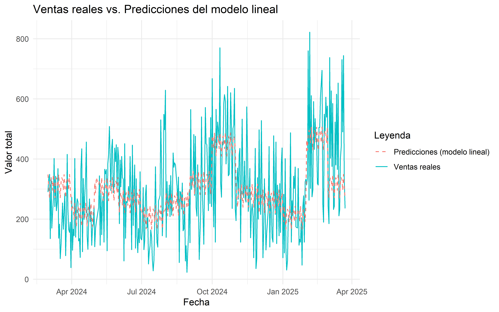
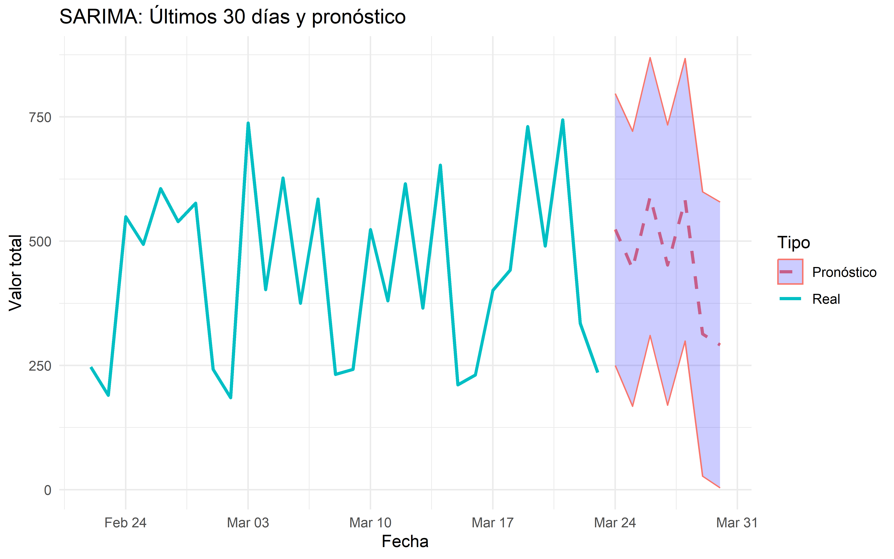

Capítulo 4 Ajuste a un modelo lineal y estacionario (Modelo Arima)
4.1 Extensión de variables temporales
Se va a enriquecer la fuente de datos con información detallada de la serie de tiempo, agregando el día de la semana (lunes, martes, etc.), el mes del año a cada registro diario.
4.2 Modelo lineal
Se crea un modelo de regresión lineal para predecir las ventas diarias (valor_total) utilizando las variables temporales creadas (dia_semana, mes).
##
## Call:
## lm(formula = valor_total ~ dia_semana + mes, data = ventas_diarias)
##
## Residuals:
## Min 1Q Median 3Q Max
## -320.25 -98.99 -3.92 89.29 413.61
##
## Coefficients:
## Estimate Std. Error t value Pr(>|t|)
## (Intercept) 166.4158 31.1736 5.338 1.65e-07 ***
## dia_semanaMon 52.6861 26.5030 1.988 0.04756 *
## dia_semanaTue 66.7581 26.5110 2.518 0.01222 *
## dia_semanaWed 59.2610 26.5358 2.233 0.02613 *
## dia_semanaThu 24.8365 26.5358 0.936 0.34991
## dia_semanaFri 77.3926 26.4103 2.930 0.00360 **
## dia_semanaSat 33.9648 26.4935 1.282 0.20065
## mesFeb 262.6093 36.3307 7.228 2.86e-12 ***
## mesMar 105.0106 31.5160 3.332 0.00095 ***
## mesApr 9.0262 35.7133 0.253 0.80061
## mesMay 94.8890 35.9921 2.636 0.00874 **
## mesJun 54.8875 35.7246 1.536 0.12530
## mesJul 0.8016 35.4178 0.023 0.98196
## mesAug 44.7058 35.4074 1.263 0.20753
## mesSep 115.4321 35.7245 3.231 0.00134 **
## mesOct 243.3142 35.4072 6.872 2.73e-11 ***
## mesNov 73.2084 35.7026 2.051 0.04102 *
## mesDec 53.5210 35.4393 1.510 0.13185
## ---
## Signif. codes: 0 '***' 0.001 '**' 0.01 '*' 0.05 '.' 0.1 ' ' 1
##
## Residual standard error: 138.2 on 367 degrees of freedom
## Multiple R-squared: 0.2743, Adjusted R-squared: 0.2407
## F-statistic: 8.159 on 17 and 367 DF, p-value: < 2.2e-16 El modelo tiene coeficientes positivos para todos los días y meses, hay algunos días y meses que son significativos, esto es consistente con el comportamiento que se espera de las ventas, pero el R cuadrado ajustado es de solo 0.2407, Esto indica que el modelo explica ~24% de la variabilidad en las ventas. Esto es un resultado muy bajo pero consistente con la alta variabilidad residual (±300) observada en la descomposición STL, que no puede ser capturada completamente por las variables temporales.
4.3 Modelo ARIMA estacional (SARIMA)
Dado que la serie es estacionaria (prueba ADF, valor p = 0.0345 < 0.05), se va ajustar un modelo SARIMA para las ventas con el ciclo semanal.
## Series: ts_ventas
## ARIMA(1,0,1)(0,1,1)[7]
##
## Coefficients:
## ar1 ma1 sma1
## 0.9456 -0.7941 -0.8238
## s.e. 0.0271 0.0462 0.0438
##
## sigma^2 = 19476: log likelihood = -2405.17
## AIC=4818.34 AICc=4818.44 BIC=4834.08
##
## Training set error measures:
## ME RMSE MAE MPE MAPE MASE ACF1
## Training set 4.685073 137.7336 109.1637 -33.30582 59.42362 0.8025019 -0.0478096
4.3.1 Estructura del modelo
El modelo ARIMA tiene una estructura (1,0,1)(0,1,1)[7].
Los componentes no estacionales (1,0,1) son: p = 1: Componente autorregresivo (AR) de orden 1. Esto confirma que las ventas actuales dependen linealmente de las ventas del día anterior como se vio en la gráfica ACF.
d = 0: No se aplica diferenciación no estacional, lo cual es consistente con el resultado de la prueba ADF (valor p = 0.0345 < 0.05), que indicó que la serie es estacionaria.
q = 1: Componente de media móvil (MA) de orden 1. Significa que las ventas actuales dependen de los errores de predicción del día anterior.
Los componentes estacionales (0,1,1) son:
P = 0: No hay componente autorregresivo estacional.
D = 1: Se aplica una diferenciación estacional de orden 1 para eliminar la estacionalidad semanal. Esto significa que el modelo trabaja con las diferencias de las ventas de cada día con el mismo día de la semana anterior (por ejemplo, ventas de un lunes menos las ventas del lunes anterior).
Q = 1: Componente de media móvil estacional (SMA) de orden 1. Significa que los errores de predicción a nivel estacional también influyen en las ventas.
s = 7: Frecuencia estacional de 7 días, coincide con los ciclos identificados en la gráfica ACF y la descomposición STL.
Este modelo SARIMA captura tanto la dependencia a corto plazo (AR(1) y MA(1)) como el ciclo semanal (diferenciación estacional y SMA(1)). Que no haya diferenciación no estacional (d = 0) es consistente, ya que la serie es estacionaria, y la diferenciación estacional (D = 1) elimina el patrón semanal.
4.3.2 Coeficientes del modelo
autorregresivo no estacional AR(1):
ar1 = 0.9456 (s.e. = 0.0271):
El valor de 0.9456 (cercano a 1) indica una fuerte autocorrelación en las ventas, las ventas de un día están altamente correlacionadas con las del día anterior. Esto es consistente con la ACF, que mostró autocorrelaciones significativas en los primeros rezagos (~0.3 a 0.4).
El valor del error estándar es 0.0271, al calcular el estadístico t (t = 0.9456 / 0.0271 ≈ 34.89) da 34.89, este valor es mucho mayor a 1.96, por lo que el coeficiente es estadísticamente significativo con un p-valor cercano a 0.
media móvil no estacional MA(1) ma1 = -0.7941 (s.e. = 0.0462):
El valor negativo indica que los errores de predicción del día anterior tienen un efecto correctivo en las ventas actuales.
El error estándar es 0.0462, al calcular el estadístico t da -17.19, su valor absoluto es mucho mayor a 1.96, que lo hace también significativo.
media móvil estacional SMA(1) sma1 = -0.8238 (s.e. = 0.0438):
El valor de -0.8238 indica que los errores de predicción a estacionales también tienen un efecto correctivo ayudando a modelar el ciclo semanal.
El error estándar es 0.0438, su estadístico t es -18.81 por lo que también es significativo.
Todos los coeficientes fueron significativos. El término AR(1) captura la dependencia a corto plazo, mientras que el término SMA(1) modela el ciclo semanal. Los términos MA(1) y SMA(1) ayudan a corregir los errores de predicción, mejorando el ajuste del modelo.
4.3.3 Varianza del error y Criterios de información
Varianza del error sigma^2 = 19476: Esta es la varianza estimada de los errores del modelo en dolares.
La raíz cuadrada de esta varianza es 139.56, este valor es una estimación de la desviación estándar de los errores.
log likelihood = -2405.17: Este es el valor mide cómo el modelo se ajusta a los datos. Se usa para calcular los criterios de información (AIC, AICc, BIC).
Criterios de información: AIC = 4818.34: Criterio de información de Akaike. Mide el ajuste del modelo penalizando la complejidad. Un valor más bajo indica un mejor modelo.
AICc = 4818.44: Versión corregida del AIC para muestras pequeñas.
BIC = 4834.08: Criterio de información bayesiano. Mide el ajuste del modelo penalizando más fuertemente la complejidad que el AIC.
Estos valores no son directamente interpretables sin comparar con otros modelos SARIMA.
4.3.4 Métricas de error
ME (Error Medio) = 4.685073: El error medio indica el sesgo promedio de las predicciones. Un valor de 4.68 sugiere en promedio el modelo tiende a predecir 4.68 unidades más de lo real. Esto es un sesgo pequeño comparando el rango de las ventas que varían entre 23.02 y 800.
RMSE (Raíz del Error Cuadrático Medio) = 137.7336: El RMSE mide el error promedio de las ventas en las unidades (dolares) de la serie. Un valor de 137.73 indica que las predicciones del modelo se desvían en promedio en ~137.73 dolares de las ventas reales que es un valor alto pero explicado por la variabilidad residual (±300).
MAE (Error Absoluto Medio) = 109.1637: El MAE mide el error promedio en valor absoluto. Un valor de 109.16 indica que, en promedio, las predicciones del modelo se desvían 109.16 unidades de las ventas reales.
MPE (Error Porcentual Medio) = -33.30582%: El MPE mide el error porcentual promedio. El valor negativo indica que el modelo tiende a subestimar las ventas en promedio, lo que contradice el ME positivo. Esto puede pasar porque el MPE es sensible a errores relativos con valores pequeños (por ejemplo, días con ventas bajas como 23.02), donde un pequeño error absoluto puede traducirse en un gran error porcentual.
MAPE (Error Porcentual Absoluto Medio) = 59.42362%: El MAPE mide el error porcentual absoluto promedio. Un valor de 59.42% indica que, en promedio, las predicciones del modelo se desvían en ~59.42% del valor real.
Este valor es alto debido a la alta variabilidad de las ventas (de 23.02 a 800). Igual que con el MPE el MAPE tiende a ser grande cuando hay valores pequeños en la serie porque un error pequeño en términos absolutos resulta en un error porcentual grande.
MASE (Error Absoluto Medio Escala) = 0.8025019: El MASE compara el MAE del modelo con el MAE de un modelo ingenuo. Un valor menor a 1 indica que el modelo SARIMA es mejor que el modelo ingenuo.
ACF1 (Autocorrelación del primer rezago de los residuales) = -0.0478096: Este valor mide la autocorrelación de los residuales en el primer rezago. Un valor cercano a 0 indica que los residuales del modelo no tienen autocorrelación significativa. Significa que el modelo modela la mayor parte de la estructura temporal de la serie dejando residuales que se comportan como ruido blanco.
4.4 Comparación de Modelos
Se comparamos la precisión de los modelos Holt-Winters (Aditivo y Multiplicativo), el modelo lineal, y el modelo SARIMA usando el error cuadrático medio (RMSE) y el error absoluto medio (MAE).
## RMSE MAE
## Additive 140.4213 111.8802
## Multiplicative 143.8373 115.8820
## Lineal 134.9217 108.0084
## SARIMA 137.7336 109.1637El modelo lineal tiene el mejor desempeño en términos de RMSE y MAE, lo que sugiere que es el mejor modelo hasta ahora. A pesar del bajo R² el modelo lineal parece estar capturando patrones estacionales básicos (días de la semana y meses) de manera efectiva, mientras que los demas modelos al ser más complejos parecen estar fallando debido a sobreajuste o datos insuficientes.